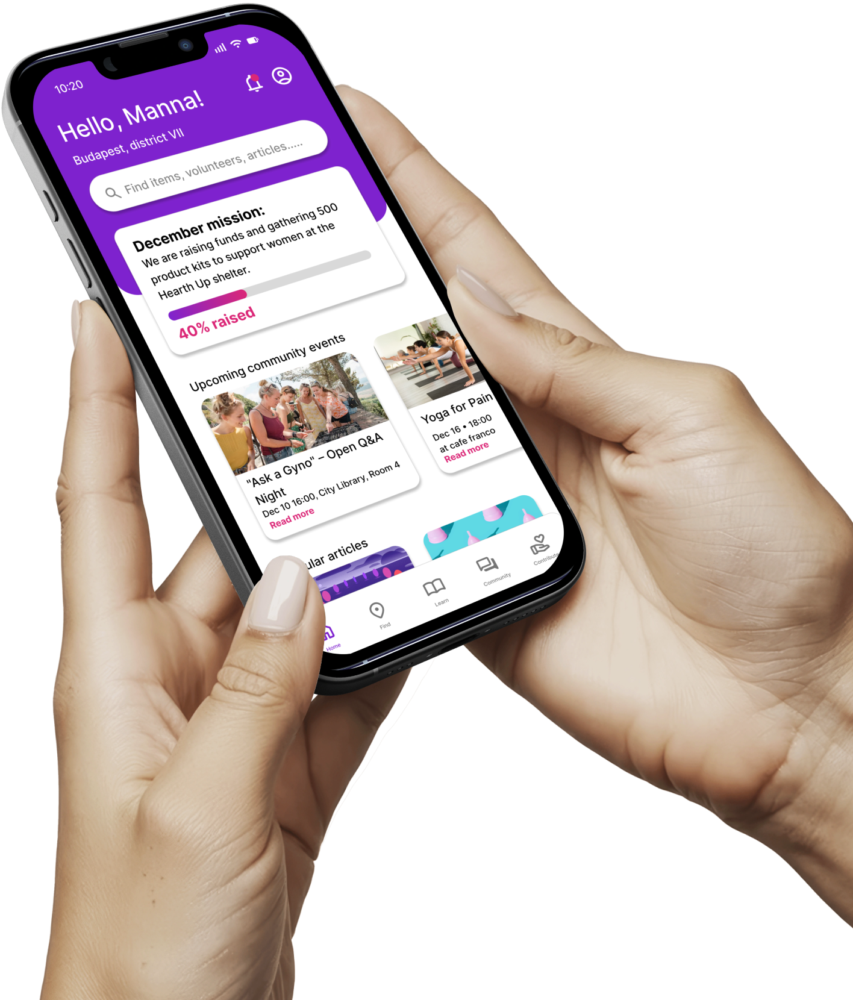
Case study · Social design
Locus
Help is around the corner.
A community-driven platform that makes period support in Budapest easy to find, and turns occasional generosity into a habit of care.
Overview
Help exists in Budapest, but it's hard to find
Our first-semester brief at MOME was: "How might we make vulnerable groups in cities safer and more supported during crisis?" I chose period poverty. I had just attended an event by A Hang, a Hungarian activist group, and was shocked by what I heard.
What started as a broad social problem narrowed, through research, into a much sharper one: support already exists across Budapest, but it is scattered, quiet, and nearly impossible to find in the moment it is needed. Locus turns it into a citywide network of support points, education and community.
- 10–15%
- of Hungary's menstruators are affected by period poverty
- 11
- interviews across 5 stakeholder groups
- 4
- core features: find, learn, connect, contribute
The process
I went wide first, from the global picture down to Budapest and real conversations, then narrowed it to one root problem and goal. From there I explored how a living community could work, and refined it into the Locus app.
01 · Discover
- Desk research:
- world → Europe → Hungary
- Landscape mapping
- 11 stakeholder interviews
02 · Define
- Root problem
- How might we…
- Goal
03 · Develop
- Living community research
- Three pillars
- Features & IA
- Activity diagrams & wireframes
04 · Deliver
- Brand & onboarding
- Four core features
- Impact
Discover
Research & planning
I wanted to understand the whole picture before designing anything. So I started worldwide, moved to Europe, and then narrowed down to Hungary, learning what works elsewhere and what is missing at home.
Research plan
From the world to one city
- Worldwide
- How period poverty is defined and measured, and the good practices of countries like Scotland.
- Europe
- How other European countries organise free products and support.
- Hungary
- The scale of the problem at home, and the support that already exists.
- Budapest
- Where help actually is, and why people can't find it.
Period poverty in Hungary
210,000–315,000
women and adolescents are affected. That is 10–15% of Hungary's menstruators.
based on EU estimates and the Hungarian Red Cross’s Lányból Nővé survey; population data: KSH
A good practice
Scotland
Free products by law.
Landscape
Hungary isn't starting from zero
Before designing anything, I mapped what already exists. The support is real. The question was why so few people seemed to know it existed.
#nemluxustáska
Annual awareness and donation campaign
Limit: seasonalMENSZ campaign
Awareness campaign
Limit: seasonalRed Cross · "Lányból Nővé"
Institutional programme ("Girl to Woman")
Limit: limited to specific schoolsJózsefváros
Local district / municipal initiatives
Limit: one districtInterviews
11 conversations, 5 perspectives
After the desk research I wanted a first-hand understanding. I defined five stakeholder groups and planned to talk to at least one person from each.
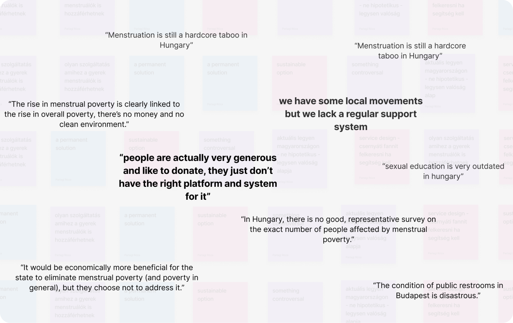
Key insight
Help exists in Hungary, but it's invisible.
People in need often don't know where to seek help, or that help exists for them at all. Current support is often seasonal (like #nemluxustáska around holidays) or limited to specific schools (Red Cross), leaving women without coverage the rest of the year.
Define
The problem isn't a lack of help
The interviews changed the question. It wasn't "how do we create support?" but "why can't people find the support that already exists?"
Root problem
Support is scattered, seasonal and invisible, so it doesn't reach people when they need it.
How might we…
The questions I started asking
HMW
…turn scattered period poverty support into a coordinated citywide network?
HMW
…make menstrual help easily accessible and findable in Budapest?
HMW
…turn occasional donations into a consistent monthly habit of care?
Turn scattered period poverty support into a coordinated citywide network.
Develop
Designing a living community
I didn't want another seasonal campaign. I wanted a permanent solution, so I researched what keeps a community alive, then planned the features and structure around it.
The solution
A community-driven platform designed to ease menstrual poverty in Budapest while empowering women to become more conscious, informed and connected.
Living community
Three pillars that keep a community alive
My research on how communities survive came down to three layers, each building on the one before.
01
Foundation
Trust and safety
02
Shared purpose
Education and empowerment
03
Activation
Participation and visibility
Features
Four things a community member can do
Based on the pillars, I planned the features that make the community work.
Find
Locate certified Support Points nearby.
Learn
Reliable cycle-health articles from professionals.
Connect
Events, discussions and recommendations.
Contribute
Donate or volunteer to support the community.
Information architecture
Structure before screens
I mapped the information architecture and activity diagrams, then moved into wireframes.
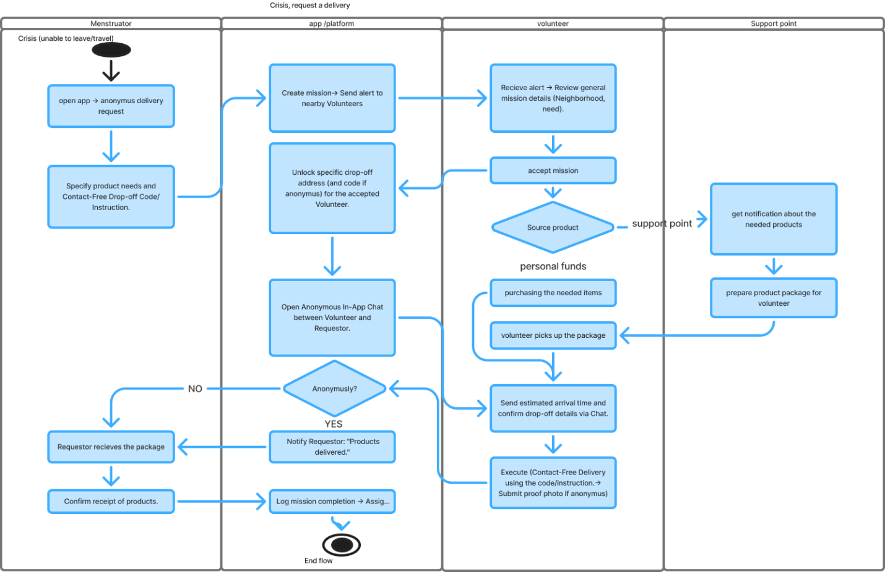
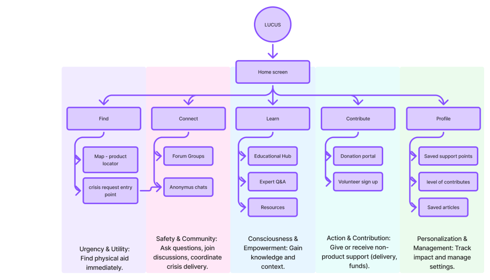
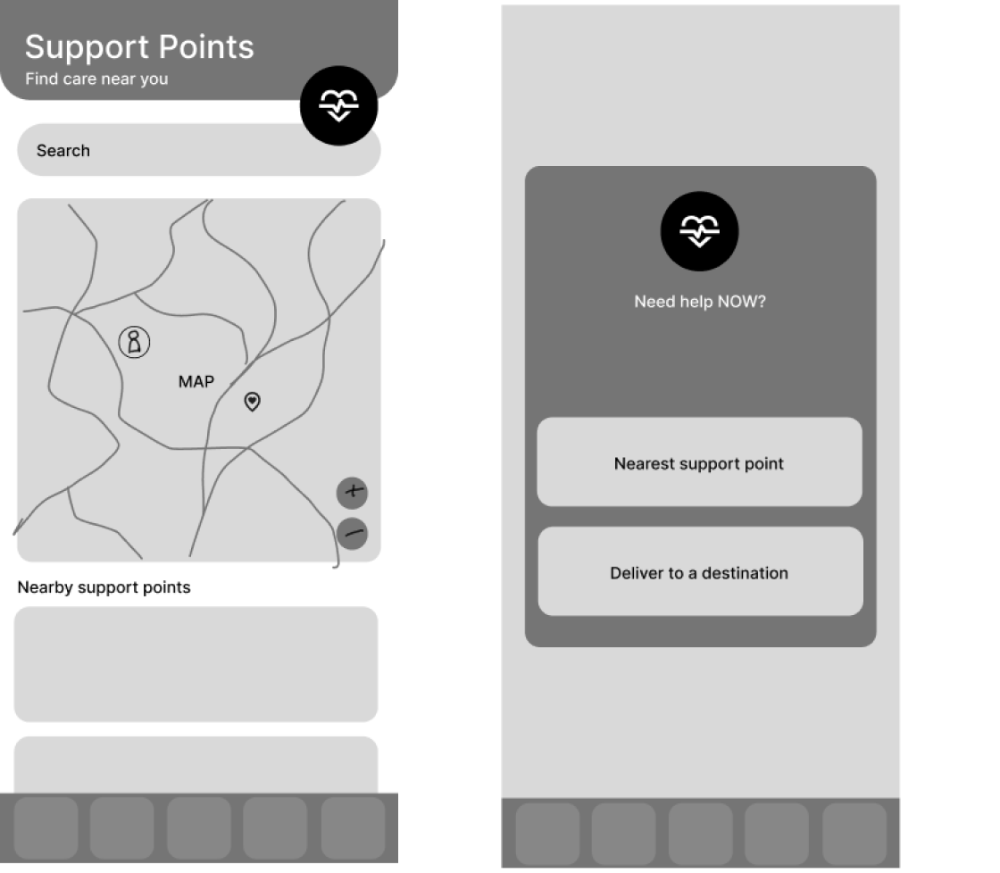
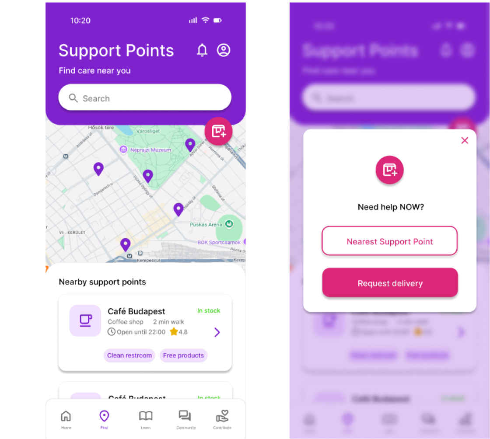
Deliver
Locus: help is around the corner
The final app brings support points, knowledge and community into one place, designed to feel safe, warm and anonymous.
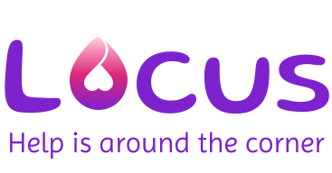
Brand
A name that means "place"
Locus is Latin for "place". The logo replaces the "o" with a location pin, so the brand itself says what the app does: help is around the corner.
Onboarding
A warm, anonymous welcome
Six onboarding screens explain what Locus offers, with a nickname-only sign-up so users can stay anonymous.
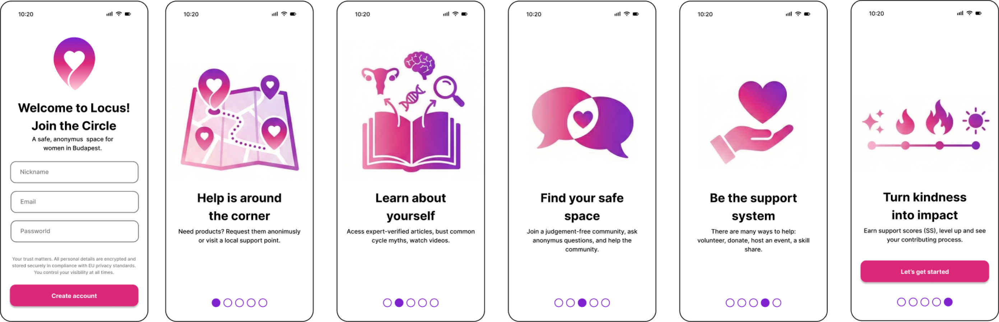
Core features
Four ways to use Locus
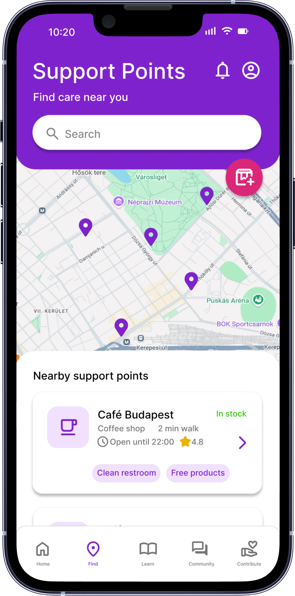
01
Find your safe space
At its core, the app bridges the gap between people in need and a network of certified Support Points, where they can access the products and help they need. We are building more than a digital tool: a permanent infrastructure of care.
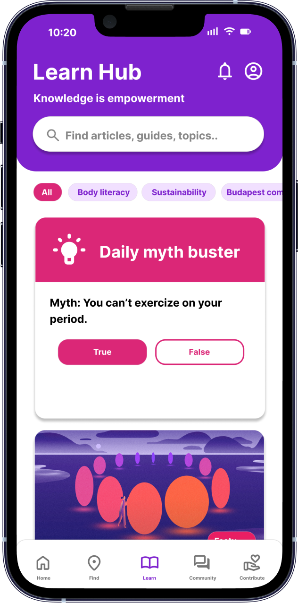
02
Learn about yourself
Many menstruators still don't know much about their cycle. In the Learn Hub they can access basic information and articles from healthcare professionals, like the Daily myth buster.
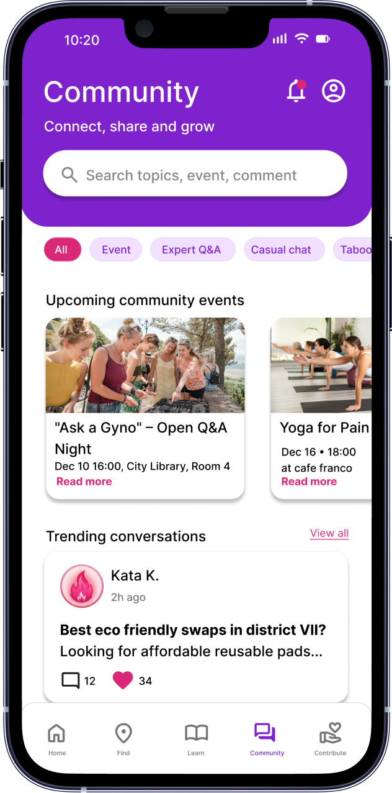
03
Connect with others
There is no better way to keep an initiative alive than a strong community around it. Here people can find cycle-health events, discuss topics, and ask for recommendations or help.
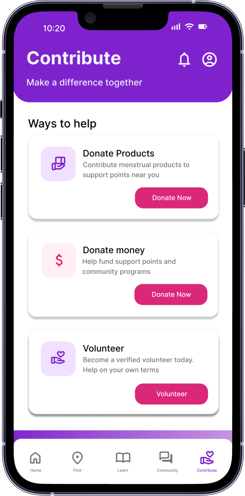
04
Contribute to the community
People are most engaged when they feel they can actively help, so users can support the community by donating products, money, or their time as volunteers.
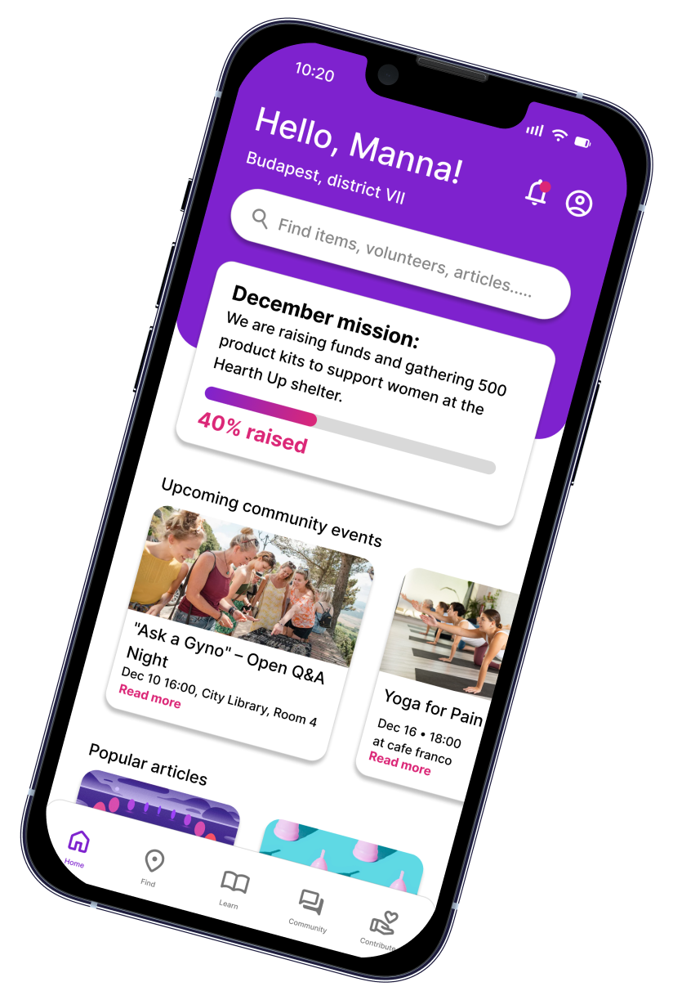
Impact
From occasional generosity to a findable system of care
Locus connects people in need with help that already exists, keeps support running all year instead of only around the holidays, and gives everyone a way to contribute.
Reflection
What this project taught me
What I learned
- Research can change the question: the problem wasn't missing help, but invisible help.
- Talking to people across five stakeholder groups gave me a much fuller picture than desk research alone.
- For a sensitive topic, trust and anonymity have to be designed first.
Next steps
- This project’s goal was to learn about research so it was research heavy, and testing was out of the scope of the semester. Later if I will develop it, testing would be the first step.
- Map and verify real Support Points across Budapest.
- Explore partnerships with existing initiatives like A Hang and #nemluxustáska.
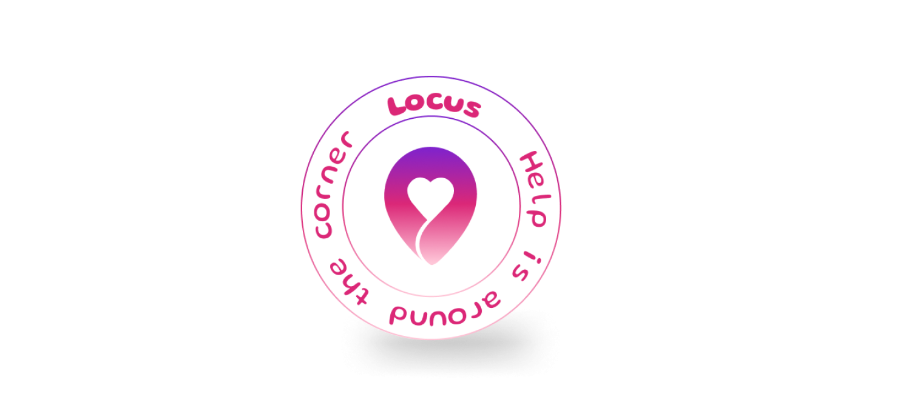